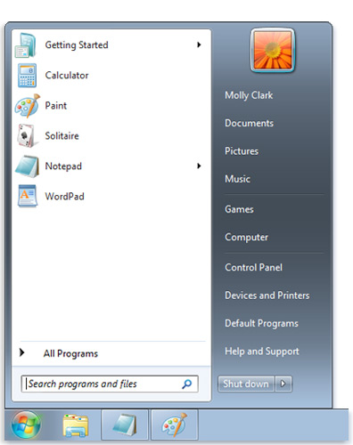
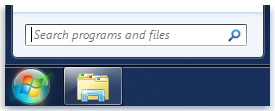
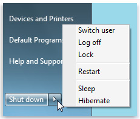

The Start Menu
A complete guide to the Windows start menu
The start menu is the main starting point to your computer's programs, files, and settings.

The start menu has many different usages. Some of the more common ones include:
- Start programs
- Open commonly used folders
- Search for files, folders, and programs
- Adjust computer settings
The Basics
There are two ways to open the start menu:
- Click the start icon in the lower-left corner of the screen
- Press the windows key (lower left, beside the ctrl and alt buttons) on the keyboard
The 3 Parts of the Menu
In Windows 7, the start menu consists of three main parts:
- The left pane shows a list of programs on your computer. Clicking on "All programs" will display the complete list.
- The right pane gives you access to frequently used folders, files, settings, and features. It's also where you can log off or shut down the computer.
- The search box, which is right below the left pane, allows you to search your computer for programs and files by typing in search items.
The Left Pane
The left pane of the start menu is mostly used for the opening of programs and files.
It displays a list of your most commonly opened programs as well as your pinned programs.
If the program you're looking for isn't in the list, you can click "All programs" at the bottom, which lists all the programs followed by a list of all the folders.
The Search Box

If you can't find the program or file you're looking for in the left pane, you can use the search box to find it by typing in keywords.
The search box is one of the best ways to find what you're looking for because it doesn't matter where the file or program is. The search box will look for anything containing the words you typed in your programs, directories in your personal folder as well as things such as e-mail messages and contacts.
Results will show up in the start menu if:
- Any word in the title matches with your search term (what you typed in)
- Any word in the actual content matches with your search term
- Any word in the property of the file matches with your search term
The Right Pane
The right pane of the start menu consists of a default list of parts of Windows that you are likely to utilise frequently.
In order, the menu lists as follows:
- Personal Folder
- Opens the personal folder of whichever user is logged on at the time. This folder contains user-specific files, such as My Documents and My Music.
- Documents
- Opens the documents library, which contains files such as text files, spreadsheets as well as others.
- Pictures
- Opens the pictures library, which contains image files as well as your digital photos.
- Music
- Opens the music library, which contains music and audio files.
- Games
- Opens the games folder, which contains all of Windows 7's default games.
- Computer
- Opens a window where you access hardware connected to your computer such as disk drives and cameras.
- Control Panel
- Opens the control panel, where you can customize your computer's appearance and functionalities, install/reinstall programs, set up networks and manage user accounts.
- Devices and Printers
- Opens a window that displays information about printers and other devices installed on your computer.
- Default Programs
- Opens a window that allows you to choose which programs you want to be defaults for certain activities.
- Help and Support
- Opens a window where you can browse help topics about Windows and your computer.
Below the list, there is a shut down button that will bring up another menu that will allow you to switch users, log off and shut down the computer.

Customizing the Start Menu
You can also customize the Start Menu on your user by pinning or removing items to and from the Start Menu.
All images retrieved 2016-03-03 from http://windows.microsoft.com/en-ca/windows/start-menu-overview#1TC=windows-7.